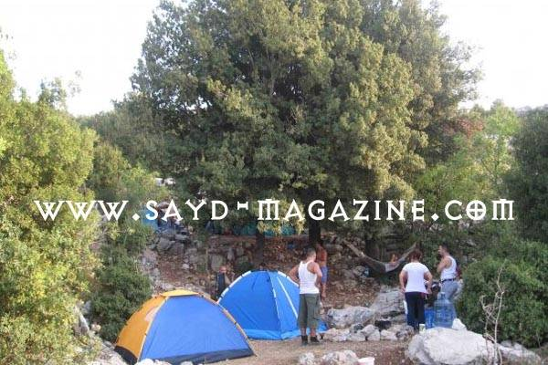

الطبيعة هي الأم الأولى التي تحتضننا وتقدم لنا الكثير من ذاتها ..من مناظر جميلة وروائح طيّبة واعشاب مفيدة وأطعمة مغذيّة .. بينما يقدم لها الجهلة في عالمنا كل بشاعة من إحراق وتخريب وتعدّيات ورمي نفايات تشبه نفسياتهم المريضة ..
فالطبيعة التي نهرع اليها كل وقت نشعر اننا بحاجة الى الحريّة، لا بد ان نتعامل معها بحريّة حب، وحريّة اهتمام، وحريّة تفاعل يشبه عطاءها.
من هنا نجزم انه لا يمكن الوصول الى هذه العناصر الأخلاقية في التعاطي معها إلا من خلال معرفتنا بها وربط عناصرها بأحاسيسنا ومزاجنا ورؤيتنا، ضمن نشاطات عديدة يمكننا القيام بها من مسير في طرقاتها الجيدة والوعرة، وممارسة التصوير،ومشاهدة الطيور والتخييم ( موضوعنا اليوم ) الذي يُعتبر من العناصر الأبرز والأهم في التعاطي مع الطبيعة لأنه يتعايش معها في الليل والنهار وفي كل الظروف المناخية، فيشكل دواء للنفس والجسد، ويزيل عنّا هموم الحياة ويقدم لنا الهدوء والاسترخاء كما يقدم اللهو واللعب واختبار القدرات والقوة وزرع روح التحدي والأنتصار للوصل الى الأفصل والأعلى .
.وقد صدق ابو القاسم الشابي حين قال " ومن لا يحب صعود الجبال يعش أبد الدهر بين الحفر"والتعامل مع الطبيعة هو في الواقع صعود وارتقاء
هذه بعض اللقطات لمخيمات في الطبيعة اللبنانية الخصبة بجمالها التي تعيش بقلق وخوف على الذات من الذوات البشعة التي تسكن روح بعض البشرعندنا ...
[gallery ids="894,892,893"]